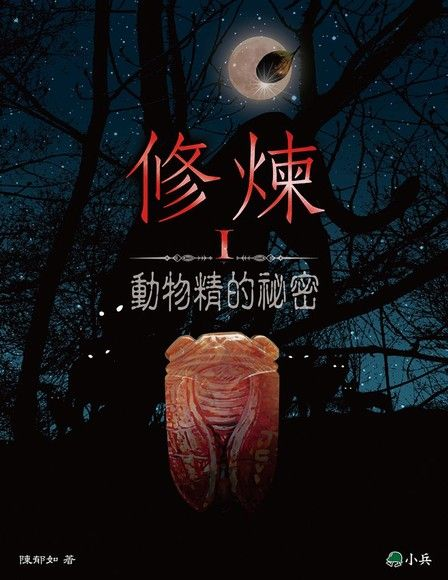
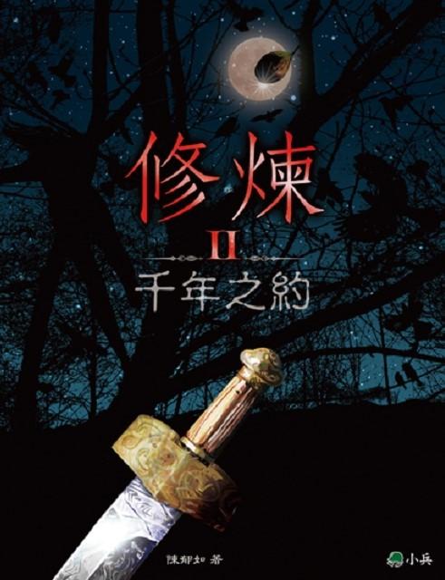
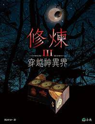
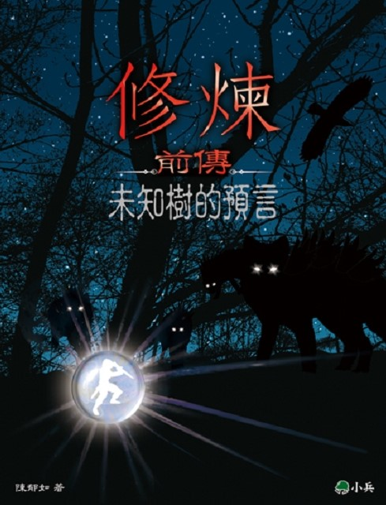
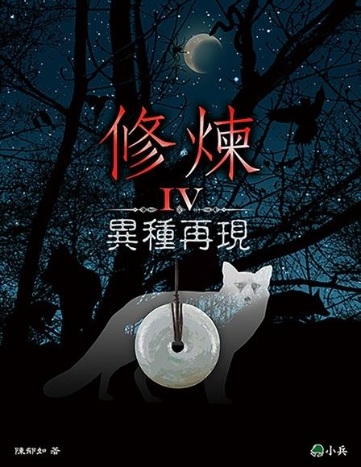

故事大意
《修煉》是系列書籍，共有五部 — 一本前傳和一到四集正集。透過風靡全球的小說《哈利波特》，作者陳郁茹決定創作出一部融合東方神話奇幻元素的華人奇幻小說。以「動物修練成精」為主軸，將歷史、陰陽五行、運氣練功、因果善報貫串整個系列。

《動物精的秘密》
十二歲的混血兒，艾美，暑假時到臺灣的外婆家玩。一天凌晨，艾美因為睡不著，發現後山裡有歧異的火光互相追逐。好齊心驅使下，她決定出門觀看，於是認識了同齡少女劉穎木，兩人成為要好的朋友，也因此艾美常常進出劉家。在一次出遊時，艾美遇上一群不良少年，他們似乎擁有神奇的能力，同時，影木的哥哥允祁出手救下了她們。也因為這樣，艾美得知劉家人都會使用法術，而且他們其實都是動物精修煉而成。神奇的是，在一次次因緣巧合下，艾美發現自己身體裡似乎也擁有這個神奇的力量，但是無論怎麼操作，法術都不會生效。於是劉家人開始教導艾美運氣、修練，嘗試控制體內能力的流淌。後來，艾美得知不良少年將準備進行一場傷害人類的計畫，其中一位甚至知道艾美身上有著特殊能力，他希望艾美可以加入他，藉由這股力量完他想做的事。艾美不答應，於是與劉家人一起展開與不良少年的對抗行動。

《千年之約》
艾美的媽媽莊姝被狼精抓走，只留下一個神祕的卷軸。透過法力，艾美透過媽媽的聲音得知了一個久遠以前的故事...…兩千多年前，有隻相思鳥被一位男人救下，從此過著一人依鳥愜意的生活。不過相思鳥偷偷的認識了一名叫做許老仙的人學會修練，後來男人過世，相思鳥也修練成人形，那人便是莊姝。後來她與一隻龜(劉慕溪)和兔(鄭妱嫀)，成為好友，三人經常一起修練。幾百年過去，莊姝再度遇見轉事後的男人，他們相遇相愛，感情甚好，但是男人再度因為人類無法長生不老而死去。莊姝傷心欲絕決定放棄修練之路，最後將近灰飛煙滅，幸好妱嫀告訴她，男人在一千年後會再度投胎，這才讓莊姝得以堅持繼續修練。
同時，傳說中得到就可以功力大增的影木果出現蹤跡，詭計多端的狼精龐英展開行動，不擇手段地想取得影木果，甚至殺害師父許老仙。為了不讓龐英得逞，莊姝三人和中途收養的老虎允祁歷經千辛萬苦終於打敗龐英，並且將他封印在一個瓷瓶中，運到臺灣藏起來。
千年之後，莊姝終於找到那位男人，於是莊姝放棄鳥精的身分，將自己變成凡人，失去所有記憶重新開始新的生命，直到二十歲她才恢復記憶。而龐英卻被釋放出來準備復仇，但莊姝現在只是個普通人，根本無法與之對抗……

《穿越神異界》
上古時代，人類、動植物、還有精怪都生活在同一個世界。但在一次爭執後，引發了可怕的戰爭，於是人類和精怪被分開成兩個世界：物人界和神異界。從此以後人類和精怪沒辦法接觸相通，人類可以繁衍生命、輪迴轉世、沒有法力，而精怪則相反。但這兩個世界並非真的完全阻隔，有個神祕的通道可以出入，這個通道由張老仙看管。然而這個通道卻被惡勢力破解，狼精因此將莊姝綁架到神異界。
為了拯救媽媽，艾美和允祁進入神異界，卻發現狼精們的法力比以往強大了許多，並且速乎也其他精 怪在協助他們。艾美和允祁究竟能不能成功救回莊姝，在神異界都經歷了什麼，且發現了哪些奇特的事情呢？

《未知樹的預言》
這本是前傳，講述許老仙在上古時代的故事。在一次征戰過後，天神將人類和神獸區分開來，形成兩個世界，分為物人界和神異界。這兩個世界有一個神祕的通道可以出入，並且由當代的領皇看管，那人便是張老仙，原名張勉，是當時的最後一代領皇。領皇等同於人類的領導者，想成為領皇必須經過許多嚴苛的考驗，進行重重關卡，才得以向人民展示知識與智慧，雖然困難，卻有許多人想嘗試。張勉為了想找出表哥文丘被害的原因，決定參加皇除爭拔賽，之中發生了許多精彩緊張的事情，也遇見了全世界唯一一棵神奇的樹，這棵樹可以預測未來，然而這課樹卻說道：⌈下一任領皇，神獸滅亡。⌋

《異種再現》
這本是作者完成第三集大結局後五年再度推出的第四集續集。關於艾美時隔兩年要回到台灣卻被一隻狐狸精化成的少年阻攔。他未知樹再度出現，而此次預言是：「異種再現，世界巨變。」有人相信這個異種指的是艾美，所以為了和平要除掉艾美。一連串奇怪的事接連發生，台灣地震頻發，似乎不是正常能量釋放，然而無論劉家人怎麼調查都找不出原因。難道住真的和未知樹的預言有關嗎?